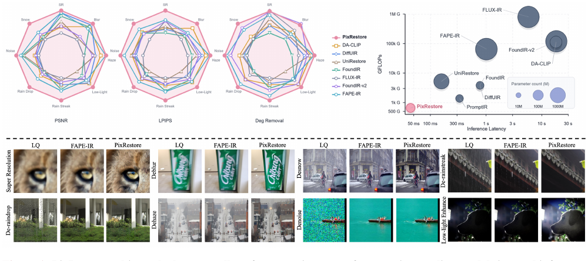
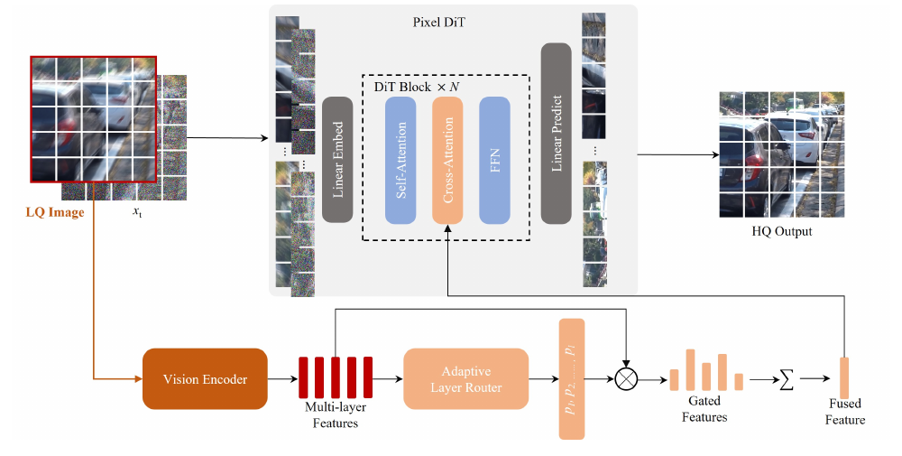
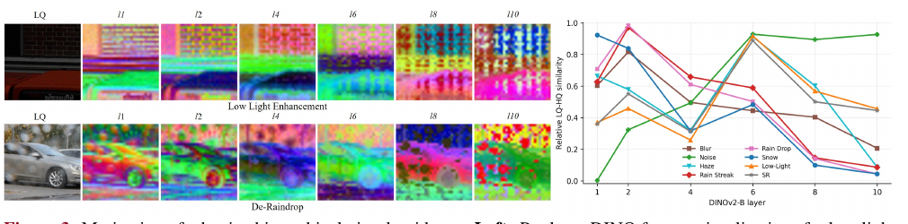

出发点：UIR 到底需不需要 T2I 那套重家伙
统一图像修复（Unified Image Restoration, UIR）想用一个模型处理噪声、模糊、雨、雾、低光、雪、超分等一大堆退化。最近的主流做法是去适配预训练的文生图（T2I）潜空间扩散模型——比如 FoundIR-v2 拿 SDXL + MoE 路由 + MLLM 写 caption，FLUX-IR 拿 FLUX + 强化 ODE 轨迹 + 成本感知蒸馏。理由很直接：T2I 有强大的生成先验和感知真实感。
但作者认为这条路有三笔隐性成本：
- 有损的 latent 瓶颈：VAE 把图压进 latent 时，会顺手丢掉修复最在意的东西——小结构、文字笔画、锐利边缘。而这些恰恰是修复要还原的。
- 目标错位（objective mismatch）：T2I 先验擅长「无中生有」地合成看起来合理的细节，但修复要的是与输入一致的细节。开放式生成会造出「看着真、其实假」的内容。
- 冗余算力：十亿级骨干 + MLLM 规划器 + MoE 路由 + VAE 编解码 + 迭代采样，堆得又大又慢。
作者的关键洞察是：UIR 不是 T2I。T2I 从一句文字凭空造图，需要极强的开放式生成能力；而 UIR 从 LQ 图出发，输入里已经塞满了视觉线索。所以 UIR 需要的开放式生成能力其实更少，它真正需要的是两件别的东西——对不同退化的鲁棒性，和像素对齐的忠实重建。
顺着这个判断，PixRestore 做了三件"逆流而上"的事：
- 无 VAE、不预训练：直接在 patch 化的 RGB 像素上从零训一个 DiT 做 flow matching，把自编码器的信息损失和开销一并砍掉。
- 自适应层级视觉引导：不靠一个静态的全局退化表示，而是用冻结的 DINOv2 多层特征，训一个层路由按图、按退化自适应地挑可靠的层做条件、给不可靠的层加监督。
- 一步蒸馏：先训多步模型，再固定
t=1、配一个在 DINO 特征上做判别的轻量 GAN，蒸成单步生成器。
一句话概括这篇的立场：修复的瓶颈不在"生成先验够不够强"，而在"你有没有把输入的像素证据留住、并针对退化自适应地用好它"。
方法：像素流匹配 + 自适应 DINO 层路由 + 一步蒸馏

p₁…p_L，把它们融成一个条件特征（Fused Feature）。LQ 图与噪声态 xₜ 沿通道拼接后 patch 化，过 N 个 DiT 块（每块含 Self-Attention → Cross-Attention → FFN），Cross-Attention 处注入融合后的 DINO 特征，最后线性解码回 HQ 输出。3.1 像素空间的修复流匹配
设 HQ 图 \(y_{hq}\in[-1,1]^{3\times H\times W}\)，LQ 图 \(y_{lq}\) 是它被各种退化污染后的版本。作者把 UIR 建成像素空间里的条件流匹配。取线性插值路径
修复 DiT \(f_\theta\) 直接预测干净图（而不是速度）：
—— 翻译：网络吃三样东西：把 LQ 图和当前带噪态 xₜ 沿通道拼在一起（6 通道）、时间 t、以及 LQ 图的多层 DINO 特征 F(y_lq)；吐出一张对干净图的估计 ŷ_hq。注意 t=1 时 xₜ 是纯噪声，t=0 时是干净图。
预测完干净图，再折算成速度做 flow matching 损失。真实速度 \(v_t=(x_t-y_{hq})/t\)，预测速度 \(\hat v_t=(x_t-\hat y_{hq})/t\)，损失是 \(\mathcal L_{\text{flow}}=\lVert\hat v_t-v_t\rVert_2^2\)。为防 \(t\to0\) 时除零，把 \(1/t\) 的分母裁剪到 0.05。
这一段的代码几乎是逐字翻译。注意 z_t 就是 \(x_t\)，hq 就是 \(y_{hq}\)，t_eps=0.05 就是那个裁剪阈值：
repo/pixrestore/flow.py:L268-297 — 像素流匹配损失：先造 x_t，预测 x0，再折算速度算 L2
z_t = (1 - t_shifted_) * hq + t_shifted_ * eps # x_t = (1-t) y_hq + t ε —— Eq(1) 的插值路径
v = (z_t - hq) / t_shifted_.clamp_min(self.args.t_eps) # 真实速度 v_t，分母裁到 t_eps=0.05
inp = torch.cat([lq_mixed, z_t], dim=1) # [y_lq ; x_t]，6 通道
if z_hq is not None:
(x_pred, x_fea) = model(inp, t, z=z_mixed, z_hq=z_hq) # 预测干净图 x0（不是速度）
else:
(x_pred, x_fea) = model(inp, t, z=z_mixed)
v_pred = (z_t - x_pred) / t_shifted_.clamp_min(self.args.t_eps) # 预测速度 v̂_t
v_error = v_pred - v
loss = _masked_mean_square(v_error, valid_loss_mask) # L_flow = ‖v̂_t − v_t‖²
# ... （下面还会加两个 DINO 辅助损失，见 3.2）
adp_wt = (loss + self.norm_eps) ** self.norm_p # JiT 式自适应梯度归一（见 §4）
loss_backward = loss / adp_wt.detach()
为什么"预测 x0 再折算速度"而不是直接回归速度？ 因为当 \(t\) 很小、\(x_t\) 已经接近干净图时，速度 \(v_t=(x_t-y_{hq})/t\) 会因为除以小 \(t\) 而数值爆炸、方差极大；而 \(x_0=y_{hq}\) 本身是一个尺度稳定的目标。预测 \(x_0\) 再折算，等价于给速度回归自动加了一个 \(t\) 相关的权重，训练更稳。这是 JiT（Back to basics: let denoising generative models denoise）那套思路在修复上的复用。
patch 化怎么让像素空间"扛得住"？ 拼接后的输入是 6 通道全分辨率图。一个 patch embedding 把整张图切成 token；patch size 取 8（正好匹配 f8 VAE 的下采样率），这样在 512×512 上 token 序列长度和 latent DiT 一样，既保住了像素证据、又没让序列爆炸。每个 DiT 块是 RMSNorm + QK-norm 注意力 + RoPE，一个共享的 timestep 块给所有块产生 AdaLN 调制参数。
值得一提的是 patch embed 用了个 bottleneck 结构（先降到 pca_dim=768 再升到 hidden_size），这是把「\(8\times8\times6=384\) 维的原始 patch」先压后展的小技巧：
repo/pixrestore/models/patch_embed.py:L26-44 — bottleneck patch embed：两步卷积
self.proj1 = nn.Conv2d(in_chans, pca_dim, kernel_size=patch_size, stride=patch_size, bias=False) # 大卷积核 = patchify
self.proj2 = nn.Conv2d(pca_dim, embed_dim, kernel_size=1, stride=1, bias=bias) # 1×1 升维
def forward(self, x):
x = self.proj1(x) # (B, pca_dim, H/p, W/p)
x = self.proj2(x) # (B, embed_dim, H/p, W/p)
x = x.flatten(2).transpose(1, 2) # (B, num_patches, embed_dim)
return x
像素空间到底比 latent 好在哪？ 作者做了一个干净的对照实验（同数据、同分辨率、同架构、同优化器、同采样器），把同一个 DiT-S 分别放在像素空间和三种主流 VAE 的 latent 空间里：
| 模型 | VAE | 参数(M) | DM 推理(ms/步) | VAE 推理(ms) | PSNR↑ | LPIPS↓ | MUSIQ↑ |
|---|---|---|---|---|---|---|---|
| Latent DiT-S | SD2VAE (f8c4) | 106.4 | 25 | 78 | 22.10 | 0.2483 | 50.38 |
| Latent DiT-S | FluxVAE (f8c16) | 106.6 | 25 | 78 | 22.63 | 0.2109 | 50.86 |
| Latent DiT-S | QwenVAE (f8c16) | 67.4 | 25 | 41 | 22.80 | 0.2181 | 51.87 |
| Pixel DiT-S | None (ps8) | 23.4 | 25 | 0 | 26.62 | 0.1593 | 54.32 |
—— 读表：像素 DiT 在所有指标上碾压所有 latent 变体，PSNR 直接高出最好的 QwenVAE 基线 3.8 dB，参数还只有 1/3–1/5，VAE 那一段编解码开销直接归零。这是全文最有说服力的一张表——它把"要不要 VAE"这个问题在受控条件下回答了。
3.2 自适应层级视觉引导：本文最有意思的模块

作者用冻结的 DINOv2 提供 dense 视觉线索（对比过 CLIP/MAE/SigLIP，DINOv2 几乎全面最好）。关键观察见图 3：不同 DINO 层携带互补线索，而层的可靠性随退化类型变化。于是核心问题变成：给定一张 LQ 图，该信哪几层？
第一步：用 LQ–HQ 相似度造一个"老师"权重。 训练时 HQ 可见，对每层 \(l\) 算 LQ 特征还保留了多少 HQ 内容——余弦相似度和归一化 \(L_2\) 距离相似度的平均 \(s_l=\tfrac12(s_l^{\cos}+s_l^{\text{dist}})\)。\(s_l\) 越大说明该层在当前退化下越可靠，就该给越大的权重：
—— 翻译：把各层的"可靠度分数"过一个 softmax，得到一组和为 1 的老师权重 q_l。可靠的层分到大权重。这个 q_l 是训练时才能算的（要 HQ），是用来教学生的监督信号。
代码里这个"老师"叫 _build_content_teacher_priors，mse_sim 就是归一化 \(L_2\) 相似度 \(s^{\text{dist}}\)，cos_sim_01 是把余弦拉到 [0,1] 的 \(s^{\cos}\)：
repo/pixrestore/models/pixel_dit.py:L334-351 — 老师权重 q_l：LQ-HQ 相似度 → softmax，对应 Eq(3)
def _build_content_teacher_priors(self, z_lq, z_hq):
lq = self._stack_dino_feature_layers(z_lq, torch.float32, None).detach().float()
hq = self._stack_dino_feature_layers(z_hq, torch.float32, lq.device).detach().float()
diff_power = (lq - hq).square().mean(dim=(-1, -2))
layer_scale = (0.5 * (lq.square().mean(dim=(-1,-2)) + hq.square().mean(dim=(-1,-2)))).clamp_min(1e-8)
mse_sim = (1.0 / (1.0 + diff_power / layer_scale)).clamp(0.0, 1.0) # s^dist：L2 距离相似度
cos_sim = F.cosine_similarity(lq, hq, dim=-1).mean(dim=-1)
cos_sim_01 = ((cos_sim + 1.0) * 0.5).clamp(0.0, 1.0) # s^cos：余弦相似度→[0,1]
similarity = 0.5 * (cos_sim_01 + mse_sim) # s_l = ½(s^cos + s^dist)
content_prior = torch.softmax(similarity / self.gate_temperature, dim=-1) # q_l = softmax(s_l) —— Eq(3)
return {'content': content_prior.to(dtype=lq.dtype), 'similarity': similarity}
第二步：训一个"学生"路由，推理时也能用。 \(q_l\) 要 HQ，推理时没有。于是训一个轻量预测器 \(\rho_\psi\)，只看 LQ 图和 LQ 特征就估权重 \(p_l=\text{softmax}(\rho_\psi([y_{lq},U_l]))\)，用交叉熵向老师对齐：
—— 翻译：让"只看 LQ 就猜层权重"的学生 p_l，去逼近"偷看了 HQ 的"老师 q_l。这是一个标准的软标签蒸馏——老师是一组概率分布，学生用交叉熵学它。学成之后，推理时不需要 HQ 也能挑对层。
第三步：融合 + 反向监督。 学生权重把各层投影特征融成一个 dense 条件 \(U_{\text{fuse}}=\sum_l p_l U_l\)（Eq 5），通过 cross-attention 注入每个 DiT 块（图像 token 当 query，\(U_{\text{fuse}}\) 当 key/value）。同时——这是最巧的一笔——对那些 LQ 与 HQ 差最大（最不可靠）的层，反过来加大特征监督：
—— 翻译：ℓ_l^feat 是"修复输出的第 l 层 DINO 特征"和"HQ 第 l 层特征"的余弦相似度损失。权重 r_l 用的是 1−s_l 的 softmax——和 Eq(3) 的 q_l 正好相反：q_l 挑可靠的层来喂条件，r_l 盯不可靠的层来使劲监督。可靠的层已经保留了内容，就直接拿来用；不可靠的层被退化打坏了，就用 HQ 特征把它"拽回来"、逼模型去除退化。两个权重一正一反、互补。
代码里 \(r_l\) 就是把相似度取 1 - sim 再 softmax（tau 是温度）：
repo/pixrestore/flow.py:L57-75 — 层级监督权重 r_l：(1 − 相似度) 的 softmax，对应 Eq(6)
def _resolve_hierar_loss_layer_weights(model, args):
# 用 DINO 老师相似度反向加权：相似度高 → 权重低
dino_similarity = _get_model_attr(model, 'last_dino_teacher_similarity', None)
if dino_similarity is None:
return None
tau = max(float(getattr(args, 'gate_temperature', 1.0) or 1.0), 1e-06)
sim = dino_similarity.detach().float()
logits = (1.0 - sim) / tau # 1 − s_l
return torch.softmax(logits, dim=-1) # r_l = softmax(1 − s_l) —— Eq(6)
而学生逼老师的那一步（Eq 4 的交叉熵）、和融合（Eq 5）都在 _gate_venc_features 里：prior_loss 就是 \(\mathcal L_{\text{wpred}}\)，最后一行的加权求和就是 \(U_{\text{fuse}}\)：
repo/pixrestore/models/pixel_dit.py:L416-428 — 学生路由 CE 损失(Eq4) + 特征融合 U_fuse(Eq5)
if self.use_dino_layer_router and compute_prior_loss and prior_probs is not None:
teacher_priors = self._build_content_teacher_priors(z_teacher, z_hq_teacher) # q_l（Eq3）
if teacher_priors is not None:
teacher_weights = teacher_priors['content']
prior_loss = -(teacher_weights.float() * prior_probs.float().clamp_min(1e-8).log()).sum(-1).mean()
self._dino_layer_router_losses.append(prior_loss) # L_wpred = −Σ q_l log p_l —— Eq(4)
token_weights = weights[:, None, :].expand(B, N_z, L)
return (z_stack * token_weights.permute(0, 2, 1)[:, :, :, None]).sum(dim=1) # U_fuse = Σ p_l U_l —— Eq(5)
多步总目标（辅助权重都取 0.5，配置文件里 dino_layer_router_loss_weight: 0.5、dino_hierar_loss_weight: 0.5 印证）：
3.3 一步蒸馏：固定 t=1 + DINO 特征判别器
多步模型要迭代采样，慢。作者把它蒸成一步生成器：从多步老师初始化学生，固定 \(t=1\)，让模型从纯高斯噪声 \(\epsilon\) 一次前向就出干净图：\(\hat y_{hq}=f_\theta([y_{lq};\epsilon],t{=}1,\mathcal F(y_{lq}))\)。
一步生成容易丢纹理，于是加一个 DINO 特征上的对抗损失：复用同一个冻结编码器，一个轻量多层判别器 \(D\)（每层一个独立头）去区分「修复输出的 DINO 特征 \(\mathcal F(\hat y_{hq})\)」和「HQ 的 DINO 特征 \(\mathcal F(y_{hq})\)」：
—— 翻译：判别器把 HQ 特征判成"真(1)"、把修复输出特征判成"假(0)"；生成器反过来想骗它把自己判成"真"。关键是——判别在冻结的 DINO token 上做，不是在原始像素上。这样判别器和条件模块共享同一套先验、几乎不增加开销，而且比像素级 GAN 更稳（不用怕生成器去 hack 像素级纹理）。
代码里判别器是每层一个"LayerNorm + 谱归一化 MLP"的小头，用带 reduction='none' 的 BCE：
repo/pixrestore/gan.py:L54-69 — 多层 DINO 判别器：每层一个谱归一化头，对应 Eq(7)(8)
def forward(self, features, *, real: bool = True):
features = as_feature_list(features)
target_value = self.real_label if real else 0.0 # real_label=0.8（软标签）
losses = []
for feature, head in zip(features, self.heads):
logits = head(_as_tokens(feature).float()).squeeze(-1) # 每层独立的谱归一化 MLP 头
target = torch.full_like(logits, target_value)
losses.append(self.loss(logits, target).mean()) # BCEWithLogits
return torch.stack(losses).sum() # 各层求和
多层 DINO 特征的抽取则靠给 DINOv2 打了个 monkey-patch，把每个 block 的中间 token 都收集起来：
repo/pixrestore/vision.py:L61-71 — 给 DINOv2 挂 forward_with_features，收集逐层中间特征（冻结）
def forward_with_features(self, image, masks=None):
features = {}
tokens = self.prepare_tokens_with_masks(image, masks)
for index, block in enumerate(self.blocks):
tokens = block(tokens)
features[index] = tokens[:, 1:] # 丢掉 CLS，只留 patch token
return features, self.norm(tokens)[:, 1:]
model.forward_with_features = types.MethodType(forward_with_features, model)
model.requires_grad_(False) # 整个 DINOv2 冻结
一步的总目标就是在 Eq(2) 上再加一个 \(\lambda_{\text{adv}}\mathcal L_{\text{adv}}\)（Eq 9），生成器和判别器交替更新。
实验结果：小、快、还最好
公开基准（Table 2，8 类退化，节选）。 红=最优、蓝斜=次优。PixRestore（S，约 50M）和 PixRestore-B（约 210M）几乎在所有任务上包揽第一或第二：
| 任务 | 指标 | PromptIR* | DA-CLIP* | FoundIR* | FoundIR-v2* | FAPE-IR* | PixRestore | PixRestore-B |
|---|---|---|---|---|---|---|---|---|
| De-rainstreak | PSNR↑ | 28.43 | 31.61 | 32.36 | 27.85 | 31.91 | 32.28 | 32.85 |
| LPIPS↓ | 0.2659 | 0.1048 | 0.1593 | 0.1773 | 0.0903 | 0.0902 | 0.0767 | |
| Denoise | PSNR↑ | 35.45 | 33.97 | 36.16 | 28.17 | 34.22 | 34.87 | 34.62 |
| LPIPS↓ | 0.1104 | 0.1462 | 0.1051 | 0.2889 | 0.0741 | 0.0624 | 0.0564 | |
| Deblur | PSNR↑ | 29.10 | 28.29 | 29.14 | 24.98 | 27.96 | 28.32 | 29.23 |
| Low-light | PSNR↑ | 17.91 | 18.01 | 23.34 | 17.04 | 26.04 | 25.62 | 25.72 |
| SR | LPIPS↓ | 0.2839 | 0.2341 | 0.2883 | 0.2493 | 0.1952 | 0.1736 | 0.1601 |
作者的解读很诚实：回归模型 PromptIR 在去噪上仍有竞争力（信息丢失少的任务），但在模糊/雨/雾/低光/超分上明显掉队；SDXL 系的 FoundIR-v2 的 DR-Score（退化去除）高但保真度/感知差，正好印证了「latent VAE 丢输入细节」；FLUX 系里 FAPE-IR 强、Flux-IR 却很不稳——说明光有强生成先验并不保证好的 UIR。
复杂度（Table 3，512×512，单卡 A800）。 这是最扎眼的对比：
| 方法 | NFE | 参数(M) | FLOPs(G) | 延迟(ms) |
|---|---|---|---|---|
| DA-CLIP | 100 | 231.8 | 112927 | 18071 |
| FoundIR-v2 | 20 | 16910 | 119334 | 18293 |
| Flux-IR | 21 | 17698 | 795290 | 5790 |
| FAPE-IR | 1 | 21575 | 64758 | 1011 |
| PixRestore | 1 | 53.7 | 658 | 44 |
| PixRestore-B | 1 | 210.9 | 1842 | 79 |
—— 读表：PixRestore 的算力是 FoundIR-v2 的约 1/181、Flux-IR 的约 1/1209；延迟 44ms，比 PromptIR/DiffUIR/FoundIR/FAPE-IR 快 7–23×。参数 53.7M 里还包含了冻结的 DINO 编码器。这张表是"UIR 不需要十亿级 T2I 骨干"这个主张的硬证据。
一个方法论副产品：DR-Score。 作者发现现有无参考指标（MUSIQ、AFINE-NR）根本测不准"退化到底去没去掉"——图 4 里 PixRestore 把雨条去得最干净，MUSIQ/AFINE-NR 却把它排最差，反而偏爱保留了退化的 FoundIR-v2 输出。于是他们提出 DR-Score：用 VLM（Gemini-3.1 Pro）判断目标退化是否被去除，每图测 5 次取平均，与人类判断对齐更好。这是个值得单独记住的点——在真实世界无 GT 场景下，NR 指标可能系统性地误导 UIR 评测。
消融决策表：每个设计到底加了多少分
Table 4 把主要设计逐个消融（15 个公开基准、8 类退化平均，起点是纯 Pixel DiT-S）：
| 组件 | 起点 | 消融方向 | 最终选择 | 为什么 |
|---|---|---|---|---|
| 空间 | Latent DiT | latent(3 种 VAE) / pixel | Pixel (ps8) | Table 1：像素空间 PSNR +3.8dB、参数 1/3、无 VAE 开销 |
| DINO 条件 | 无 (A0, 26.62) | 单层 l2/l5/l11 / 无 | 先证明"加就有用" | 加任意单层都涨；最佳单层 l5：PSNR 26.62→27.36 |
| 层数 | 单层 l5 (A2) | 平均 2 层 / 平均 6 层 | 多层 | 平均 6 层 A5：PSNR→27.72、MUSIQ→55.01；浅深层互补 |
| 融合方式 | 均匀平均 6 层 (A6) | 均匀 / 自适应路由 | 自适应 (A7) | A7 比 A6：PSNR 27.36→27.66、SSIM +0.006、LPIPS 更低——层的可靠性随退化变 |
| 层级监督 | 无 (A5) | 加 L_feat (均匀/自适应) | 自适应 L_feat | A6 把 LPIPS 从 0.1407→0.1239（感知↑），但均匀监督会掉 PSNR，自适应更平衡 |
| NFE | 10 步 (A7) | 10 / 4 / 1 | 1 步也够 | A9(1步) PSNR 反升到 28.07——更少 Euler 步减少积分误差和过平滑 |
| 一步蒸馏 | 直接单步 (A9) | 有/无 GAN 蒸馏 | 加 DINO-GAN (A10) | PSNR 28.07→28.49、LPIPS→0.1120、MUSIQ 53.34→55.52 |
| 训练范式 | 直接回归 | 回归 / 流预训练+蒸馏 | 流预训练+一步蒸馏 | Table 5：同骨干同迭代数，PSNR 27.00→28.49、LPIPS 0.1494→0.1120 |
两个反直觉点值得单独标注：
- 降 NFE 反而略涨 PSNR/SSIM（A7→A8→A9：27.66→27.75→28.07）。作者解释是更少的 Euler 更新减少了积分误差累积和过平滑。对修复这种"输入已经很像输出"的任务，长采样轨迹是负担而非收益。
- 均匀特征监督会掉 PSNR（A5→A6：27.72→27.36，但 LPIPS 变好）。说明"对所有层一视同仁地拿 HQ 特征去监督"会牺牲保真度换感知——这正是要引入自适应 \(r_l\) 的动机。
实现细节与「论文 vs 代码」核对
交叉读代码发现了若干论文里没细说、但对复现很关键的点，也有几处口径需要澄清：
-
【口径澄清】"MeanFlow" 是遗留脚手架，实际用的是普通 flow matching。 flow.py 顶部 docstring 写着 "Pixel-space MeanFlow"，还有
sample_t_r（采样 \(t,r\)）、flow_ratio、train_steps这些 MeanFlow 才需要的东西；但真正被训练调用的loss_fm里完全没有用到r——它就是「预测 x0 → 折算速度 → L2」的标准 flow matching，与论文 Eq(1) 一致。config 里flow_ratio: 0.5的注释也叫 "MeanFlow and classifier-free guidance"。结论：发布版目标函数是 flow matching，MeanFlow 的接口是没删干净的脚手架，读代码时别被误导。 -
自适应梯度归一化（论文未提）。
loss_backward = loss / (loss + norm_eps)^norm_p .detach()（adaptive_loss_power: 0.5）。这是 JiT 风格的把损失开方后当分母的自适应权重，效果是自动平衡不同 \(t\)、不同样本的梯度尺度。论文的公式里看不到它，但它对像素空间训练的稳定性很可能是关键。 -
给路由额外喂了一个"退化 token"（论文未提）。 除了 \([y_{lq},U_l]\)，代码里
use_lq_degradation_token: true，有个LQDegradationEncoder（3 层 stride-2 卷积 + 池化）专门从原始 LQ 图抽一个全局退化向量，拼进层门控上下文_gate_context。论文 Eq 里的 \(\rho_\psi([y_{lq},U_l])\) 没体现这个额外分支。 -
老师相似度里的 \(s^{\text{dist}}\) 是具体的一个式子。 论文只说"归一化 \(L_2\) 距离相似度"，代码给了明确定义 \(s^{\text{dist}}=1/(1+\text{diff\_power}/\text{layer\_scale})\)，其中
layer_scale是 LQ/HQ 各自能量的均值。复现时这个归一化方式不能想当然。 -
路由启用后，原来的可学习
layer_gates被冻结。_freeze_exclusive_router_gate_params把layer_gates的梯度关掉，改由dino_prior_content_head（那个向老师蒸馏的头）产出融合权重。代码注释直言"不再用自适应的 layer_gates"。这说明发布版走的是"相似度老师蒸馏"这条路，而不是"纯端到端学门控"。 -
条件增强 aelq（论文未提）。
use_aelq: true，训练时把 LQ 用球面插值和噪声混合（cond_strength_aelq_list: [5.0, 1.0]），配合 CFG（cfg_ratio: 0.1）。这是提升条件鲁棒性的工程手段。 -
对得上的部分。 裁剪阈值
t_eps=0.05✓（Eq 对应"clip at 0.05"）；辅助损失权重0.5✓（Eq 2/9）；patch size 8✓；DINO 取 6 层[1,2,4,6,8,10]均匀分布✓；DINOv2 冻结✓；特征投影前 channel RMS norm✓；cross-attention 用图像 token 当 query、融合特征当 k/v✓（layers.py:L206）。核心方法的实现与论文高度一致，差异都在"论文没写的工程增强"上，没有发现会改变结论的实现级矛盾。
批判与延伸
值得商榷的地方
- "扔掉 T2I 先验"的代价被实验设置藏起来了一部分。 PixRestore 从零训练依赖一个 2.83M 张、覆盖 8 类退化的大规模配对语料。它省掉的是 T2I 预训练，但换来的是自建的大规模退化配对数据——对没有这种数据的人来说，"不用预训练"并不等于"便宜"。而且泛化只在这 8 类退化的分布内验证，遇到训练分布外的复合退化能不能扛，论文没有正面回答。
- 一步生成 + 从零训练，感知上限可能受制于数据而非模型。 T2I 先验的价值在于见过海量自然图像、能补出合理纹理。PixRestore 在保真度指标（PSNR/SSIM/LPIPS）上赢得干净，但在真实世界测试集的 MUSIQ 上（Table 6）其实并不领先 FoundIR-v2 那类保留了强生成先验的方法。也就是说，"忠实"和"好看到能无中生有补细节"之间，PixRestore 明确选了前者——这在极端信息丢失（重度低光、大倍率 SR）时是不是最优，取决于应用。
- DR-Score 用 VLM 当裁判存在循环风险。 它是个好的诊断工具，但用一个会"脑补"的 VLM 去判断退化是否去除，本身也可能有偏（例如偏好某种"看起来干净"的风格）。论文放在附录说与人类对齐，但主表已经用它排名，读者需要意识到这条证据链的强度弱于 PSNR/LPIPS。
- DINOv2 是天花板也是地板。 整套自适应引导都建立在"DINO 层相似度能反映退化可靠性"之上。对 DINO 本身没见过的退化模态（如特定传感器噪声、压缩伪影），层相似度这套先验是否还成立，是个开放问题。
延伸阅读：与相似工作的交叉验证
PixRestore 的核心赌注是「像素空间 + 无 VAE」。这恰好是 2026 年一批工作在激烈争论的问题，把它们的结论并排放，分歧一目了然：
| 工作 | 对"latent vs 像素"的立场 | 一步生成怎么做 | 与 PixRestore 的关键异同 |
|---|---|---|---|
| PixRestore（本文） | VAE 有害，从零训纯像素 DiT | 固定 t=1 + DINO 特征 GAN | 基准：无 VAE、无 T2I 预训练 |
| asymflow-2026 | 不弃 latent 模型，用秩-非对称速度参数化把 latent 流匹配 lift 到像素 | — | 同样想要像素级保真，但保留了预训练 latent 模型，只是"抬"上来；PixRestore 直接不要 latent 模型 |
| latent-to-pixel-2026 | 同问题（latent→pixel 迁移），不同刀法 | — | 与 AsymFlow 同月对打；三者共同承认"像素空间更忠实"，但是否要复用 latent 预训练上分成两派 |
| omgsr-2025 | latent 空间一步超分 | 把 LQ 注入到中间时刻（SNR 算最佳注入点）+ GAN | 都用 GAN 稳一步生成，但注入策略相反：OMGSR 从中间时刻起步，PixRestore 从纯噪声(t=1)起步 |
| oftsr-2024 | latent 一步超分 | 蒸馏 + 可调保真/真实感曲线 | 同为一步，但 OFTSR 强调"保真↔真实感"可调；PixRestore 是固定地偏向保真 |
分歧的可能成因：
- "要不要 VAE" 的分歧本质是"有没有大规模退化配对数据"。 PixRestore 敢从零训纯像素，是因为它自建了 283 万配对样本；AsymFlow / L2P 想复用 latent 预训练，是因为在没有这种数据时，预训练模型见过的自然图像分布是免费的先验。两派在不同的数据前提下都对。
- "从纯噪声还是从中间时刻起步" 的分歧本质是任务信息丢失程度。 OMGSR 面对超分（LQ 已含大量结构），从中间时刻注入能少走冤枉路；PixRestore 面对 8 类退化（有些如重度低光信息丢失严重），统一从 t=1 起步更通用但更依赖条件（LQ 拼接 + DINO 引导）把信息带回来。
- 都用 GAN，但判别的位置不同。 OMGSR/OFTSR 在像素/latent 上判别，PixRestore 在冻结 DINO 特征上判别——后者更省、更稳，但上限受 DINO 表达力约束。
对这一整片"像素 vs latent、一步生成"的全景，可参考本站的 diffusion-sr-2026 调研。
研究启发（可迁移的套路）
- "老师偷看 GT、学生只看输入"的软标签蒸馏，是把"训练时可算、推理时不可算"的量落地的通用套路。 这里老师用 LQ–HQ 相似度算层权重（Eq 3），学生只看 LQ 学（Eq 4）。任何"有个理想信号但推理时拿不到"的场景（如需要 GT 的自适应权重、需要未来帧的调度）都能套这个模式。
- 一正一反两个权重（\(q_l\) 挑可靠的喂条件、\(r_l\) 盯不可靠的加监督）是"条件"与"监督"解耦的漂亮设计。 条件要"用现成的好料"，监督要"补最短的板"，二者目标不同、权重就该相反。这个"conditioning 用 top、supervision 用 bottom"的思路可迁移到任何多源特征融合 + 蒸馏的任务。
- 在冻结的基础模型特征空间里做对抗，比在像素空间做 GAN 更省更稳。 复用同一个冻结编码器同时做「条件、监督、判别」三件事，判别器共享先验、几乎零额外开销。这是"把基础模型当共享特征底座"的一个具体范例。
- 反直觉：对"输入已很像输出"的任务，采样步数越少可能越好。 修复不是从零合成，长采样轨迹带来的积分误差和过平滑可能压过多步细化的收益。做 restoration/editing 类任务时，别默认"多步一定更好"。
- 别信单一 NR 指标给 restoration 排名。 MUSIQ/AFINE-NR 会系统性偏爱"看起来锐利但保留了退化"的输出。真实世界无 GT 评测时，配一个"退化是否真去除"的正交指标（哪怕是 VLM 裁判）能救命。
讨论 / Comments
评论托管在本仓库的 GitHub Discussions, 需 GitHub 账号。